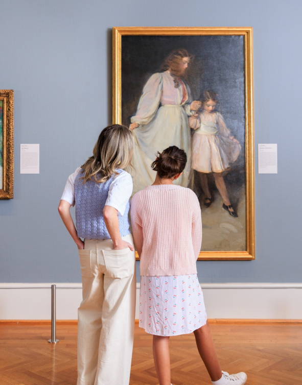

Art Institute of Chichago
A Chicagói Művészeti Intézet a világ egyik legismertebb és leggazdagabb művészeti gyűjteményével rendelkező múzeuma. Gyűjteménye több ezer évet ölel fel: az ókori civilizációk alkotásaitól kezdve az európai festészet mesterművein át egészen a modern és kortárs művészetig. A látogatók olyan híres alkotókkal találkozhatnak, mint Monet, Van Gogh vagy Grant Wood. A múzeum célja, hogy a művészetet mindenki számára elérhetővé tegye, inspirációt nyújtson, és közelebb hozza a kultúrát a mindennapokhoz.

Kollekció
A galéria kollekciója a világ művészetének egyik legátfogóbb válogatása, amely több ezer év alkotásait mutatja be. Megtalálhatók benne az ókori kultúrák tárgyi emlékei, az európai festészet kiemelkedő mesterművei, valamint az impresszionizmus és a modern művészet híres alkotásai. A gyűjtemény különlegessége, hogy egymás mellett láthatók a klasszikus és a kortárs művészet darabjai, így a látogatók átfogó képet kaphatnak a művészet fejlődéséről.
